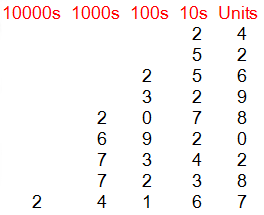

• The integers are made up of negative whole numbers, positive whole numbers and zero.
• In everyday life we use the denary, or base 10, system and the value of a digit is dependent on the column it is placed in.

• The left - most digit is the most important. Start comparing digits from the left when ordering a list of integers.
• Approximations of large exact numbers can be made. Numbers can be approximated by rounding to the nearest ten, or nearest hundred, or nearest thousand and so on, depending on the degree of accuracy required.
• Numbers get larger on a number line as you move from left to right.
• Numbers get smaller on a number line as you move from right to left.
• Think of a number line when working with negative numbers. Draw one if you need to.

Some vocabulary:
• SUM - add
• DIFFERENCE - subtract
• PRODUCT - multiply
• ODD - cannot be divided by 2
• EVEN - can be divided by 2
• FACTOR (DIVISOR) - divides exactly into
• MULTIPLE - multiplied by a whole number
• COMMON FACTOR - a number that is a factor of every number in a list.
• PRIME NUMBER - a positive integer with exactly 2 factors, 1 and itself.